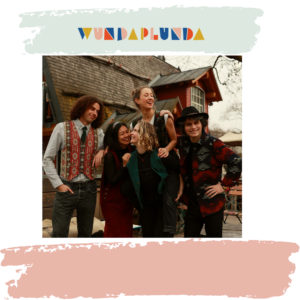
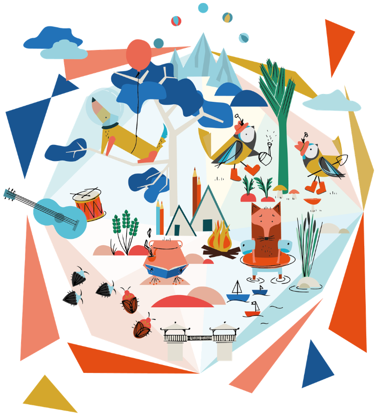

Schaut mal, wer diesen Sommer kommt!

Programm 2026 — der Vorgeschmack
03.–08. August 2026
Ökodorf Sulzbrunn · Allgäu
Sechs Tage draußen mit Musik, Shows, Workshops und Lagerfeuer. Hier siehst du schon mal, welche Künstler:innen und Bands dieses Jahr dabei sind — den ausführlichen Tagesplaner bekommen alle angemeldeten Familien direkt von uns.
